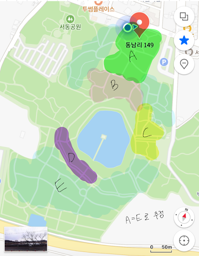

현장에서 기록하고, 웹에서 공유하는 궁남지 탐사
계획서의 탐사 항목(연꽃·수생식물 분포, 밀도)을 토대로, 위치와 사진을 모아 시각화합니다. 지도는 Google Maps Embed와 탐사 구역 도면을 전환해 확인할 수 있습니다.
탐사 구역 지도

아직 등록된 사진이 없습니다.사진 추가 방법을 참고해
photos/ 폴더에 이미지를 넣고 목록을 업데이트하세요.관찰 기록(요약 표)
| 종 | 위치 | 밀도 |
|---|